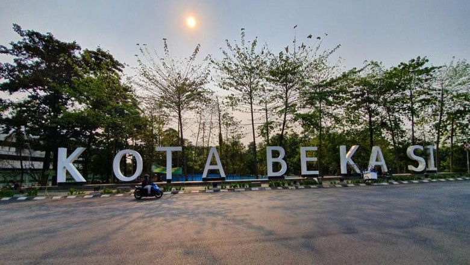

Selayang Pandang Kota Bekasi

Pada perkembangannya kini sesuai dengan Perda No. 4 tahun 2004, Kota Bekasi mempunyai 12 kecamatan, yang terdiri dari 56 kelurahan, yaitu : Kecamatan Bekasi Barat, Kecamatan Bekasi Selatan, Kecamatan Bekasi Timur, Kecamatan Bekasi Utara, Kecamatan Pondok Gede, Kecamatan Jatiasih, Kecamatan Bantar Gebang, kecamatan Jatisampurna, Kecamatan Medan Satria, kecamatan Rawalumbu, kecamatan Mustika Jaya dan kecamatan Pondok Melati.
Selain menjadi wilayah pemukiman, Kota Bekasi juga berkembang sebagai Kota perdagangan, jasa dan industri. Untuk menunjang perkembangannya, Pemkot Bekasi telah mengembangkan Satuan Pelayanan Satu Atap (SPSA) yang mendapatkan Citra Pelayanan Publik Tingkat Nasional. Pemkot Bekasi terus mengembangkan fasilitas-fasilitas yang mendukung aktifitas masyarakat, seperti pasar tradisional dan modern, perumahan, tempat ibadah, sarana pendidikan dan kesehatan.
Dukungan sarana transportasi darat di Kota Bekasi, terus dievaluasi dan dikembangkan. Bus dan stasiun KA Bekasi telah memiliki trayek cukup banyak sehingga mobilitas masyarakat, barang dan jasa sehari-hari dapat berjalan dengan lancar. Memiliki akses langsung ke pelabuhan Tanjung Priuk dan Bandara Soekarno Hatta melalui jalur bebas hambatan pintu tol Bekasi Barat dan Bekasi Timur melintasi Jakarta, atau sebaliknya. Posisi Kota Bekasi juga semakin penting berada di jalur tol Jakarta Cikampek setelah dibangunnya jalan tol Cipularang, yang menghubungkan secara cepat antara Bandung dengan Jakarta. Saat ini juga telah mulai dijalankan pengembangan jalan tol JORR (Jakarta Out Ring Road) yang menghubungkan tol Jagorawi dengan Cikunir.
Sektor industri dan perdagangan merupakan sektor yang diunggulkan, ini sesuai dengan Visi Kota Bekasi, yaitu unggul dalam jasa dan perdagangan, kini berkembang sangat pesat. Selain itu, banyak juga industri kecil yang berkembang dan telah dapat membuka pasar internasional. Perdagangan ikan hias yang ada di Kota Bekasi saat ini merupakan komoditi terbesar di Asia Tenggara. Dieksport ke berbagai negara Australia, Belanda dan Selandia Baru. Sektor industri besar juga telah menetapkan Kota Bekasi sebagai kawasan perindustrian yang dapat memberikan keuntungan bagi pengusaha lokal maupun internasional.
Berkembangnya berbagai potensi daeah di Kota Bekasi, juga tidak lepas dari adanya fasilitas akomodasi seperti perhotelan. Dinas Perindustrian dan Perdagangan sendiri, selalu menyiapkan segala fasilitas apabila investor akan masuk di Kota Bekasi. Demikian pula fasilitas perbankan dan perumahan.